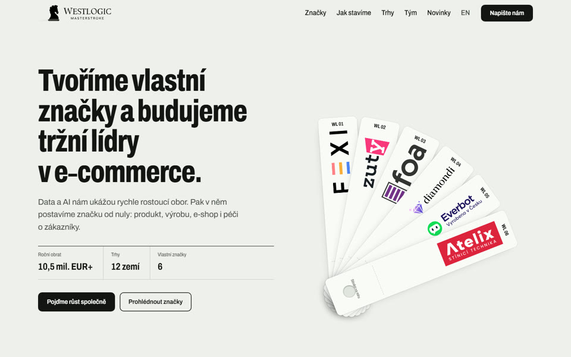
- Vzorník s pravými logy všech 6 značek
- Formulář sám pozná, o co jde
- Rychlý, bez šablony
AI agenti, kteří řídí marketing šesti značek
Reklama, kreativy, B2B obchod a SEO. Agenti dělají práci, lidé rozhodují.
Westlogic · listopad 2026
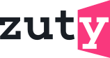

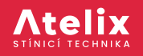

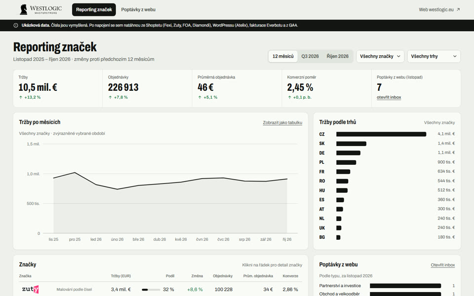
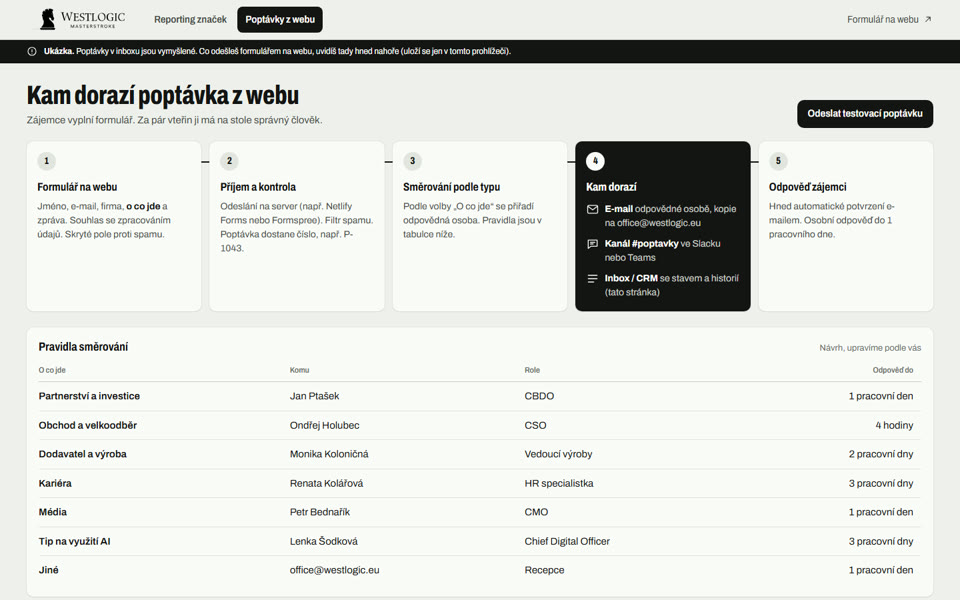
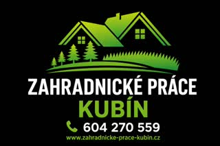
Zdroj: tabulka poptávek klienta. Počet zakázek ještě roste.
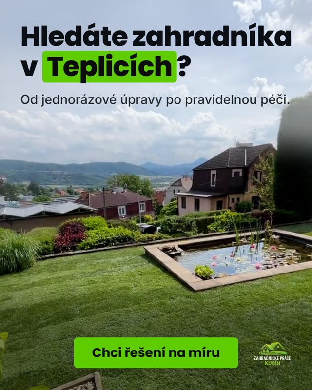
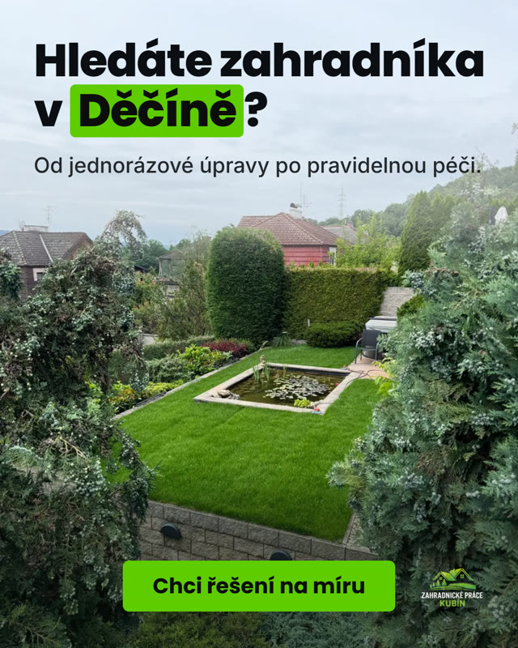
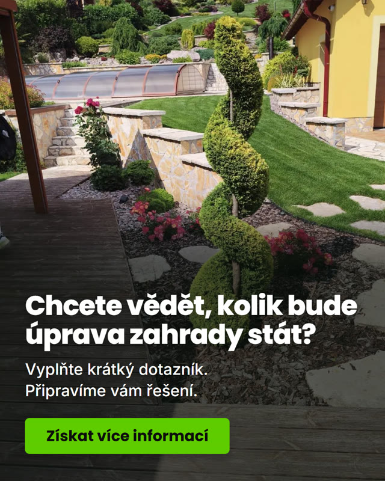
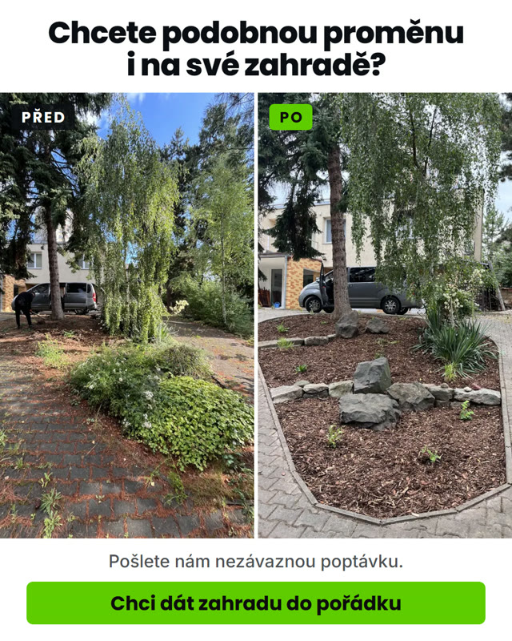
„Prořez stromů, jednorázový velký úklid.“
Jméno skryto · +420 7•• ••• ••• · •••••@volny.cz
Zakázka 35 000 Kč„S úpravou zahrady.“
Jméno skryto · +420 6•• ••• ••• · •••••@seznam.cz
Zakázka 20 000 Kč„Příprava zahrady na zimu, ostříhat ovocné stromky 2 kusy, posekat trávu cca 40 cm vysokou…“
Jméno skryto · +420 7•• ••• ••• · •••••@seznam.cz
Zakázka 10 000 Kč„Ostříhání 3 m vysokého a 15 m dlouhého plotu u thují, prosím o přibližnou cenu.“
Jméno skryto · +420 7•• ••• ••• · •••••@seznam.cz
Zakázka 8 000 Kč„Zahrada cca 1000 m² zanedbaná, plán co s tím dál, aby vypadala dobře.“
Jméno skryto · +420 6•• ••• ••• · •••••@seznam.cz
Nabídka odeslána„V březnu příštího roku zajistit jarní úpravu stromů, keřů, živého plotu.“
Jméno skryto · +420 7•• ••• ••• · •••••@seznam.cz
Nová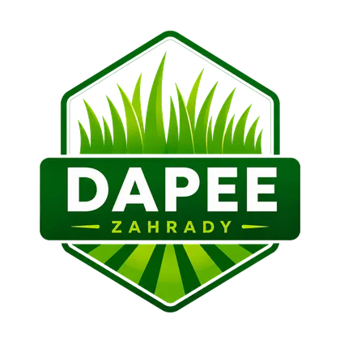
Zdroj: tabulka poptávek klienta. Kampaň běží, zakázky se teprve domlouvají.
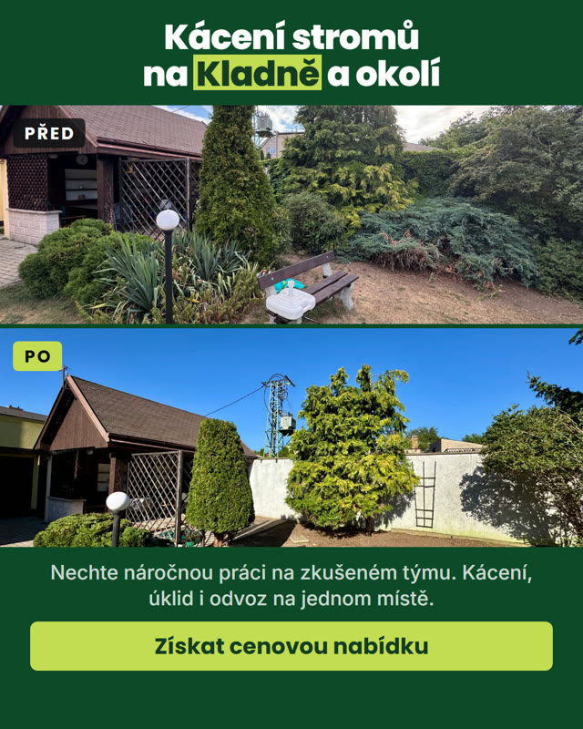
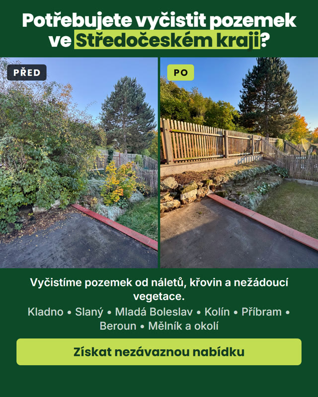
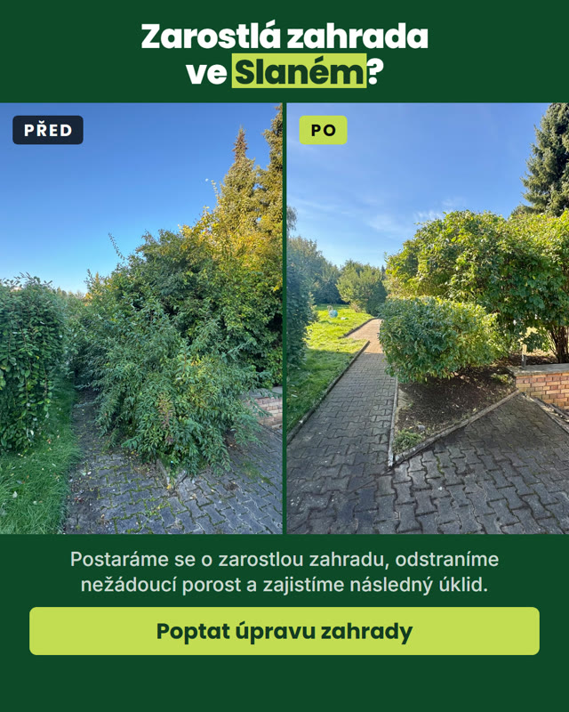
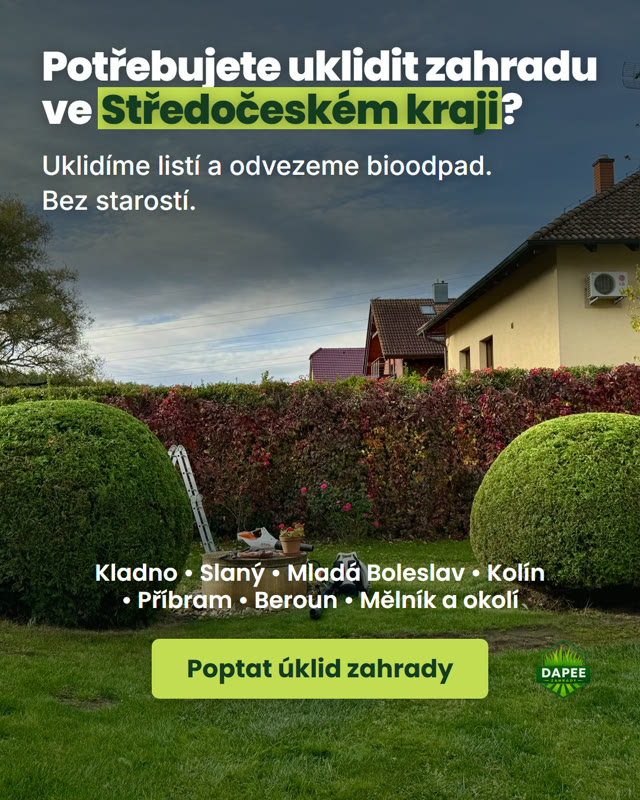
Náš AI agent kompletně spravuje kampaně na Facebooku a Instagramu. Každý den.
Agenti vyrobí a upraví videa i grafiku pro všechny značky a jazyky. Drží se brand manuálu.
Agent najde správné lidi ve firmách, napíše jim a domluví schůzku obchodníkovi.
| Trh | Značka | Téma |
|---|---|---|
| DE | Zuty | Malen nach Zahlen |
| DE | Diamondi | Diamond Painting |
| PL | Zuty | malowanie po numerach |
| FR | Zuty | peinture par numéro |
| CZ | Fexi | rolety den a noc |
| PL | FOA | moskitiery |
Objemy hledání doplní agent při auditu.
Termíny jsou návrh. Upravíme je na první schůzce.